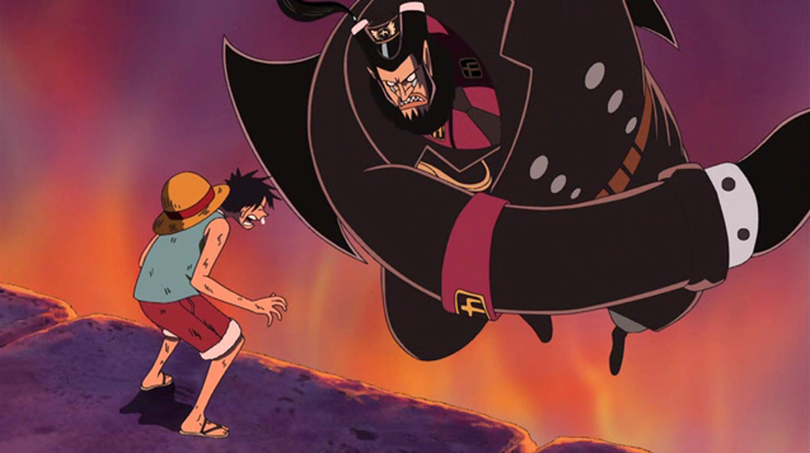

頂上戦争編
海底監獄インペルダウン
 一度入ったら、二度と生きては戻れない。脱獄不能と名高い世界最大の大監獄、インペルダウンに兄・エースが収監されたと聞いたルフィは、〝王下七武海〟ハンコックの力を借り、単身インペルダウンに潜り込む。だがそこには、想像を絶する〝地獄〟が待ち受けていた…。
紅蓮、猛獣、飢餓、焦熱――階を下るほどに過酷さを増す障害。迫りくる恐るべき地獄の番人達。ルフィは道中、かつて麦わらの一味と戦ったバギーやMr.３、ボン・クレーらの協力を得て、困難を突破。エースが囚われている下層を目指す。
だが、LV４焦熱地獄にて、監獄最大の脅威、監獄署長マゼランが強襲。圧倒的な強さの〝ドクドクの実〟の能力を前に、ルフィは毒に侵され倒れてしまう。
ニューカマーランド
全身を毒に蝕まれ、絶望的な状況にあったルフィをボン・クレーが救う。彼の助けでルフィはLV５の監獄から解放されるが、極寒地獄の中で満身創痍の二人は意識を失ってしまう。そんな二人の前に現れたのは、奇妙な恰好をした人物、イナズマだった。
大怪我を負ったルフィとボン・クレーは、幻のインペルダウンLV５.５番地、ニューカマーランドに運ばれ、手当てを受ける。５.５番地は、看守さえその存在を知らぬ囚人達の楽園。未だ猛毒に侵されていたルフィは、ニューカマーランドの主、エンポリオ・イワンコフの能力で治療を受け、20時間にも及ぶ苦悶の末、九死に一生を得る。実はこのイワンコフ、〝革命軍〟の幹部で、ルフィの父ドラゴンの同胞でもあった。
チーム結成
収監されているエースを救出するため、イワンコフらと共に最下層のLV６へと向かうルフィ。だが時すでに遅く、ルフィが到着した時には、エースは処刑場のあるマリンフォードへ身柄を移す為、軍艦へと連行された後だった。だがルフィは諦めない。マリンフォードの〝海軍本部〟へ行く決意をしたルフィに、LV６に凶悪犯として収監されていたクロコダイルが語りかける。「ここを抜けたきゃおれを解放しろ」。不本意ながらもエース救出のため、ルフィ達はクロコダイルと、そして同じく収監されていた元七武海のジンベエを仲間に加え、インペルダウンからの脱出を図る。
ルフィに加え、元七武海が二人。そしてイワンコフ率いるニューカマーの戦士達。いまだかつてない強力チームは、看守や狂暴な獄卒獣でさえ止められない。ついにはマゼランすらもやり過ごし、脱獄に成功する。そして海軍の軍艦を奪ったルフィ達は、〝正義の門〟を開けるためにインペルダウンに残ったボン・クレーに涙の別れを告げ、マリンフォードに向かった。
頂上決戦
海軍が本部を構えるマリンフォードにて、〝白ひげ海賊団２番隊隊長〟ポートガス・Ｄ・エースの公開処刑が決まった。〝海賊王〟ロジャーの息子だったエースを処刑し、忌まわしき血を断とうとする海軍。仲間の死を絶対に許さない白ひげは、海賊艦隊を率いてマリンフォードに乗り込む。
迎え撃つは世界政府の二大勢力〝海軍本部〟と〝王下七武海〟。ここにどちらが勝って負けても時代が変わる、史上空前の戦いが勃発した。
エース救出
〝世界を滅ぼしうる力〟と言われる〝グラグラ〟の能力を持つ白ひげ。その力は圧倒的だったが、海軍本部の最大戦力である〝三大将〟と七武海を有する海軍も負けておらず、一進一退の攻防が続く。そのさなか、インペルダウンの脱獄囚を引き連れたルフィ達が乱入。戦いはますます混迷を増していく。
状況を打開するため、海軍は強力兵器〝パシフィスタ〟を投入。さらに白ひげ傘下の海賊、大渦蜘蛛のスクアードをそそのかして白ひげを刺させ、致命傷を負わせる事に成功する。
一方、ルフィは一心不乱に処刑台のエースを目指す。立ちはだかる七武海や海軍の精鋭達に苦戦するも、白ひげやマルコをはじめとする白ひげ海賊団の隊長達、そしてイワンコフらインペルダウン脱獄組の援護を受け、ついにエースの解放に成功する。
ポートガス・D・エース死す
「全員!!必ず生きて!!!無事新世界へ帰還しろ!!!」。自らの死期を悟った白ひげは、最期の〝船長命令〟を下し、仲間達に後を託す。残った己の全生命をかけ、仲間達の脱出を支援する白ひげ。
だがそんな中、エースが海軍〝大将〟赤犬の攻撃からルフィを庇い、腹を貫かれてしまう。自分を愛してくれた仲間への感謝を口にし、ルフィの腕の中で息絶えたエース。ルフィはそのあまりのショックに、意識を失ってしまう。
終戦
戦場がさらなる混乱に包まれる中、インペルダウン最下層、LV６から解放した世界最悪の犯罪者達を引き連れ、黒ひげが襲来。白ひげに襲い掛かる。黒ひげ達の総攻撃を受けた白ひげは、最期に「〝ひとつなぎの大秘宝〟は実在する!!!」と言い残し、絶命する。死んだ白ひげから能力を奪い、〝ヤミヤミ〟と〝グラグラ〟という二つの強大な力を手に入れた黒ひげは、自らの時代の到来を宣言し、海軍本部を崩壊させる。
それでも海賊、海軍共に誰一人として武器を捨てず、戦いは泥沼の様相を見せる。だが、そんな不毛な戦いを止めるべく、海兵コビーが声をあげる。赤犬はこの行為を妨害とみなし拳を振り下ろすが、それを止める者が。〝四皇〟の一人、赤髪のシャンクスだった。シャンクスは海軍と海賊双方に剣を納める事を提案し、元帥のセンゴクもこれを承諾。かくして〝大海賊時代〟開幕以来最大規模、のちに〝マリンフォード頂上戦争〟と呼ばれる戦いは幕を閉じ、歴史に深く刻まれる事となった。
メッセージ
ジンベエによって間一髪のところを救われたルフィは、駆け付けたロ－の潜水艦に乗せられマリンフォードを脱出、女ヶ島へと運ばれる。治療の甲斐あって、何とか一命を取り留めたルフィ。その脳裏に幼き日のエース、そしてもう一人の〝兄〟サボとの思い出が蘇る。
後悔と自責の念で押しつぶされるルフィだったが、ジンベエの言葉により、自分にはまだ大切な仲間がいる事を思い出す。一刻も早く仲間に会う為、シャボンディ諸島へ向かおうとするルフィの前に、レイリーが姿を見せ、ある提案を持ち掛ける。
その後、ルフィはレイリー、ジンベエと共にマリンフォードを再訪。その行為は瞬く間に世界中を駆け巡ったが、そこにはバラバラになった仲間達へのメッセージが隠されていた。「力をつけ、２年後にシャボンディ諸島で再会する」。
ルフィからメッセージを受け取った麦わらの一味は、２年後の再会に向け、動き出す。そしてルフィもまた、レイリーと共に修行を開始するのだった。